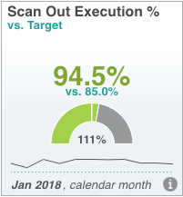
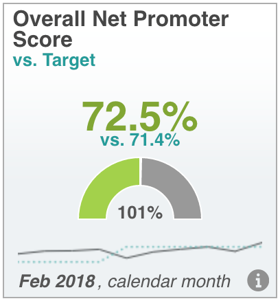

<!doctype html>
<html class="no-js" lang="">
<head>
  <meta charset="utf-8">
  <meta http-equiv="x-ua-compatible" content="ie=edge">
  <title>Awesome!!</title>
  <meta name="description" content="">
  <meta name="viewport" content="width=device-width, initial-scale=1">

  <link rel="apple-touch-icon" href="apple-touch-icon.png">
  <!-- Place favicon.ico in the root directory -->

  <link rel="stylesheet" href="css/normalize.css">
  <link rel="stylesheet" href="css/main.css">
  <script src="js/vendor/modernizr-2.8.3.min.js"></script>
  <script src="js/vendor/aframe.min.js"></script>
  <script src="js/vendor/aframe-ar.js"></script>
  <script>THREEx.ArToolkitContext.baseURL = 'https://rawgit.com/randito/ar.js/master/three.js/'</script>
</head>

<!-- <body style='margin : 0px; overflow: hidden;'>
</body>
-->

<body style='margin : 0px; overflow: hidden;'>

  <!-- Add your site or application content here -->
<!--   <a-scene embedded artoolkit='sourceType: webcam;'>
    <a-assets>
      
    </a-assets>
    <a-assets>
      
    </a-assets>

    <a-plane id="plane" src="#scan_out" position="0 0 0" rotation="-90 0 0" width="2" height="2" color="#eeeeee"></a-plane>
    <a-plane id="sloh" src="#sloh" position="0 0 0" rotation="-90 0 0" width="2" height="2" color="#eeeeee"></a-plane>

    <a-entity camera></a-entity>
  </a-scene>
-->

<a-scene embedded artoolkit='sourceType: webcam;'>
  <!-- handle unknown marker -->
  <a-marker type='unknown'>
  </a-marker>

  <a-assets>
    
  </a-assets>
  <a-assets>
    
  </a-assets>
  <a-assets>
    
  </a-assets>

  <!-- handle hiro marker -->
  <a-marker preset='kanji'>
    <a-plane id="plane" src="#scan_out" position="0 0 0" rotation="-90 0 0" width="2.0" height="2.0" color="#eeeeee"></a-plane>
  </a-marker>

  <!-- handle kanji marker -->
  <a-marker preset='hiro'>
    <a-plane id="sloh" src="#sloh" position="0 0 0" rotation="-90 0 0" width="2.0" height="2.0" color="#eeeeee"></a-plane>
  </a-marker>

  <!-- handle kanji marker -->
  <a-marker type='pattern' patternUrl='patt/a.patt'>
    <a-plane id="a" src="#a" position="0 0 0" rotation="-90 0 0" width="2.0" height="2.0" color="#eeeeee"></a-plane>
  </a-marker>

  <!-- add a simple camera -->
  <a-entity camera></a-entity>
</a-scene>


<script src="https://code.jquery.com/jquery-1.12.0.min.js"></script>
<script>window.jQuery || document.write('<script src="js/vendor/jquery-1.12.0.min.js"><\/script>')</script>
<script src="js/plugins.js"></script>
<script src="js/main.js"></script>

<!-- Google Analytics: change UA-XXXXX-X to be your site's ID. -->
<script>
  (function(b,o,i,l,e,r){b.GoogleAnalyticsObject=l;b[l]||(b[l]=
    function(){(b[l].q=b[l].q||[]).push(arguments)});b[l].l=+new Date;
  e=o.createElement(i);r=o.getElementsByTagName(i)[0];
  e.src='https://www.google-analytics.com/analytics.js';
  r.parentNode.insertBefore(e,r)}(window,document,'script','ga'));
  ga('create','UA-XXXXX-X','auto');ga('send','pageview');
</script>
</body>
</html>
